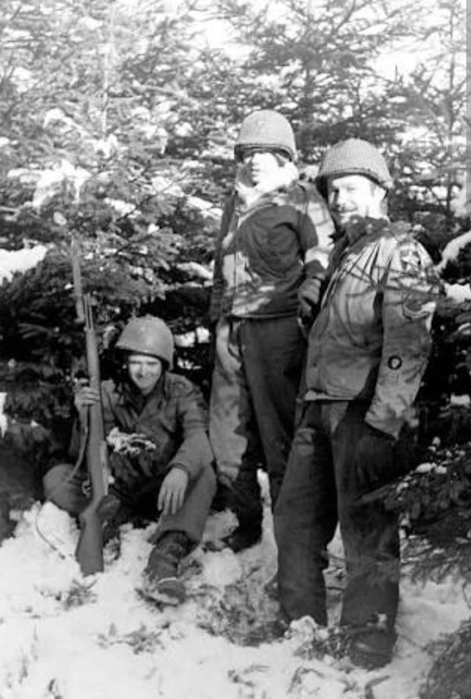
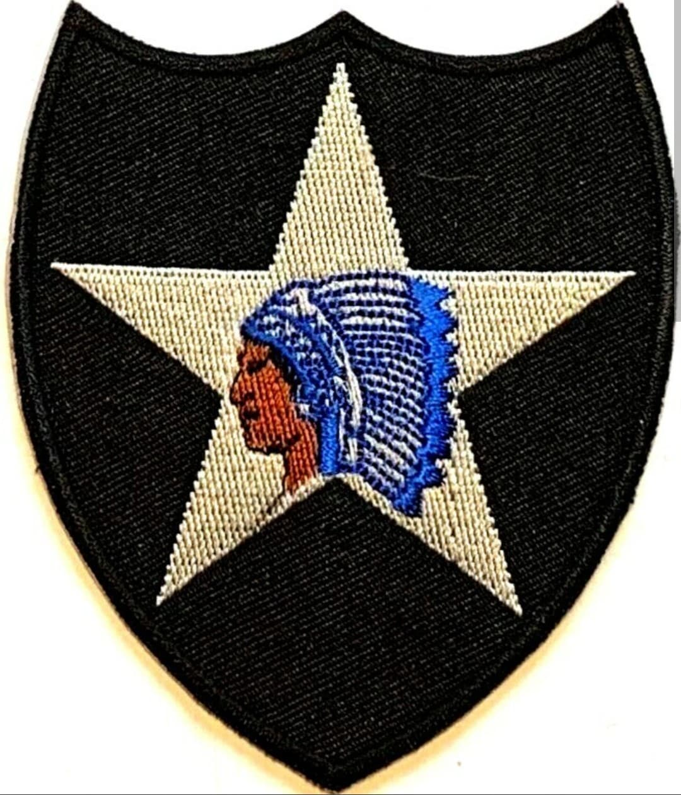
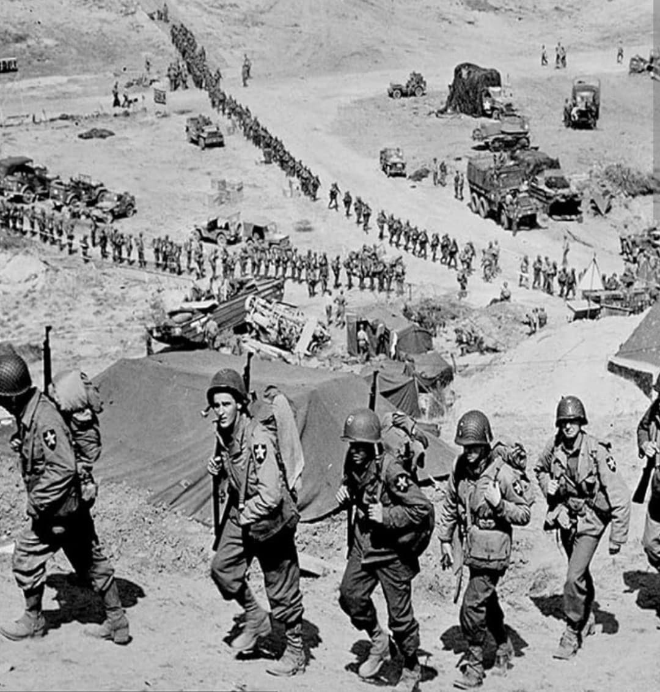
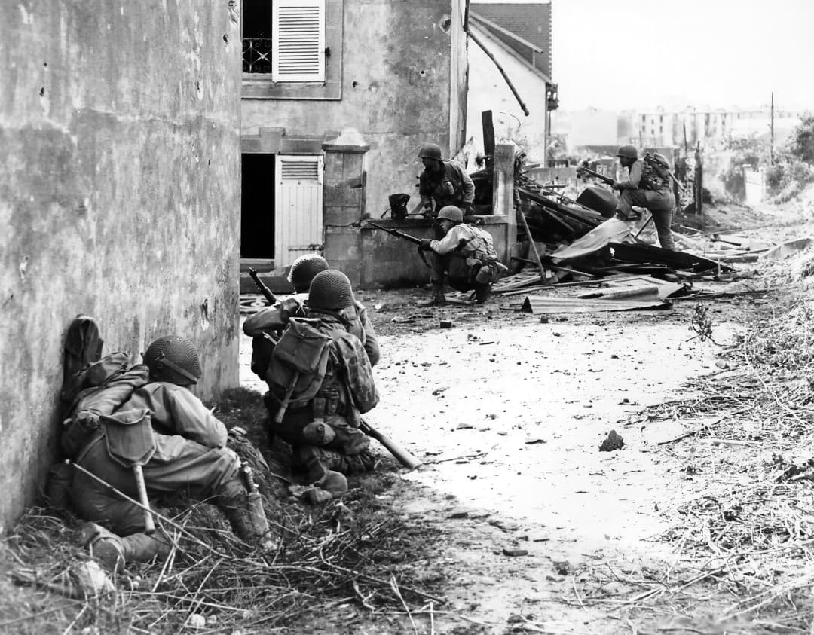

La célèbre division au chef d'Indien, héroïne des combats du bocage et de la bataille des Ardennes

La 2nd Infantry Division de l'armée américaine, surnommée l'“Indianhead” en raison de son célèbre insigne représentant une tête de chef amérindien sur une étoile blanche à cinq branches, est l'une des unités d'infanterie les plus aguerries du théâtre d'opérations européen.
Débarquée en Normandie le 7 juin 1944 (D+1), elle s'est illustrée dans les combats acharnés des haies du bocage normand, lors du siège sanglant de Brest, puis en première ligne pendant la bataille des Ardennes.
Formée en France en octobre 1917 pendant la Première Guerre mondiale, la division associe à l'origine des régiments d'infanterie de l'US Army et des brigades du US Marine Corps. Son insigne unique est conçu par ses propres soldats durant ce premier conflit.
Sa devise officielle est “Second to None” (Second de personne). Au cours de la Seconde Guerre mondiale, la division est commandée par le général Walter M. Robertson.

La 2nd Infantry Division débarque sur la plage d'Omaha Beach le 7 juin 1944 (D+1). Elle est immédiatement engagée dans le secteur d'Aure, libérant Trevières puis progressant vers la ville stratégique de Saint-Lô.
Face à des défenses allemandes solidement ancrées dans le bocage, les soldats de la division affrontent l'enfer de la « guerre des haies ». La prise de la Colline 192 (Hill 192) le 11 juillet 1944 constitue l'un des faits d'armes majeurs de la division, ouvrant la voie à la capture de Saint-Lô.

Après la percée de l'Opération Cobra, la 2nd Infantry Division est réassignée en Bretagne pour réduire la forteresse allemande de Brest, défendue par les parachutistes du général Ramcke.
Pendant plus de trois semaines, les hommes de la division livrent de violents combats urbains, bunker par bunker, jusqu'à la reddition de la garnison allemande le 18 septembre 1944.

En décembre 1944, alors qu'elle attaque vers les barrages de la Roer, la division est surprise par la grande contre-offensive allemande dans les Ardennes. Positionnée sur la **crête d'Elsenborn (Elsenborn Ridge)**, elle résiste héroïquement aux assaut des divisions Panzer.
Sa défense opiniâtre bloque le flanc nord de l'avance allemande. En 1945, l'Indianhead franchit le Rhin à Remagen, progresse à travers l'Allemagne et termine la guerre en République tchèque à Pilsen en mai 1945.
Au cours de 303 jours de combat intensif en Europe, la 2nd Infantry Division enregistre plus de **16 700 pertes** (dont environ 3 000 tués au combat). Six de ses membres reçoivent la *Medal of Honor*.
Aujourd'hui encore, la 2nd Infantry Division reste une unité d'active prestigieuse de l'US Army, conservant fièrement l'insigne à la tête d'Indien.
Page du Musée HOP WW2 – Section États-Unis & Unités d'Élite